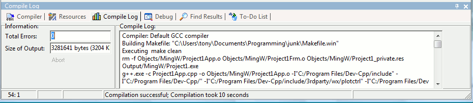
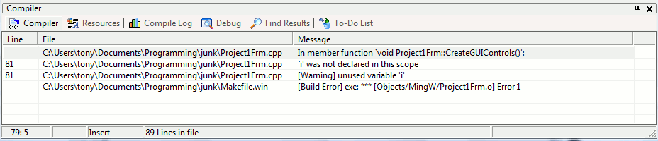

The build process can be generally divided into four steps :
Just go to the Execute menu and click Compile (shortcut : Ctrl+F9), and wxDev-C++ will take care of the 4 build steps.
Look at the bottom panel of wxDev-C++, you should get something like this :

This log window shows you what wxDev-C++ is doing (the program it executes, the files it is creating, ...).
If your program compiled, you will see the message ‘Compilation
successful’ in this window.
If compiling or linking fails, you will see a list of the errors on the bottom panel :

You can directly jump to the line in your code where the error appears by double-clicking on item.
Note, the GNU/MingW Makefile system that we use should detect any files that have been changed between builds and only re-compile those files. However, there are some times when you may want to just force the Makefile system to rebuild everything in the project. To do this, just go to the Execute menu and Rebuild All (shortcut: Ctrl+F11). Rebuild all is equivalent to calling Clean and then Compile.